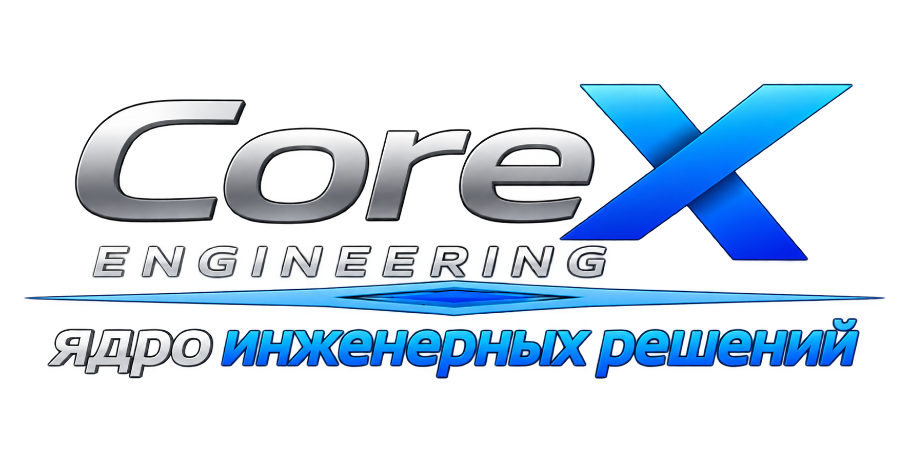
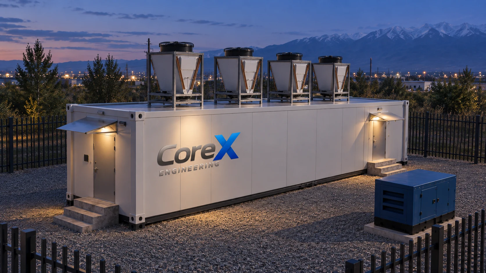

Жүктемеге сай жинақтау
Тіректерді, электр қорегі мен салқындатуды IT-жүктеме және резерв бойынша таңдаймыз. Инвестицияны кезеңдеп жоспарлау үшін форматты таңдағанда кеңейту мүмкіндігін ескереміз.

Серверлік қуатты жеке модульдермен дамытуға болады. MetaRack, MetaRow және MetaCube шешімдерін жүктеме мен қосылымдар бойынша салыстырамыз — инвестицияны даму кезеңдерімен және бос орынмен үйлестіру үшін.
Модульдік ДӨО-ны талқылау ↗
Тіректерді, электр қорегі мен салқындатуды IT-жүктеме және резерв бойынша таңдаймыз. Инвестицияны кезеңдеп жоспарлау үшін форматты таңдағанда кеңейту мүмкіндігін ескереміз.
Алаңды, электр қорегін және сыртқы суықпен жабдықтауды тексереміз. Модуль жеткізілгенге дейін нысан дайындығын бақылау үшін жеткізу мен монтаж аясын бекітеміз.
Жинақтың толықтығын, қосылымдарды және жүйелер жұмысын тексеріп, мониторингті баптаймыз. Іске қосу нәтижелері модульді пайдалануға беруге негіз болады.
Модуль конфигурациясы, алаң талаптары және қосу жұмыстарының тізімі — құнды бағалау мен орналастыруды дайындауға негіз.
Алаң мақсаты, тіректер саны мен қуат тығыздығы, қолжетімді қуат, сыртқы қосылымдар, климат және кеңейту кезеңдері.
IT-жүктемені, орналастыру орнын және қолжетімді электр қуатын көрсетіңіз. Форматтарды салыстырып, жинақты есептеу мен алаң дайындығына қажет деректерді анықтаймыз.